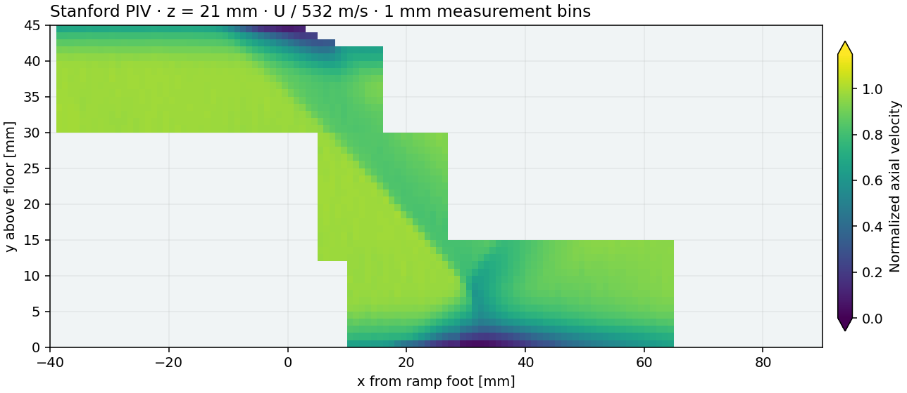

Mach 2.05 · Stanford PIV + published SU2
The ceiling ramp
A 3 mm ceiling ramp sends a shock into a low-aspect-ratio duct. Compare two turbulence models at the same measured coordinates.

Change the error metric
Two published SU2 models compared with the same PIV nodes. Error is normalized by 532 m/s. Lower is better.
What you are seeing
The ramp turns and compresses the flow. Across the duct, an adverse pressure rise can thicken the boundary layer. The PIV map shows finite-height axial velocity in the chosen plane. The comparative diagnostic checks the same sampled coordinates in the archived model exports.
At x = 10 mm, normalized MAE is 0.05919 for SA and 0.04819 for SST. Absolute mean bias is 0.03490 for SA and 0.03816 for SST. Changing the metric reverses the ranking at four of ten stations.
Evidence limits
The evaluation concerns published SA and SST exports. Interior mesh identity and run convergence are unresolved. The sampled velocities cannot directly determine experimental wall friction or an experimental separation length.
Sources and replay
Stanford PIV archive · Pinned SU2 exports · Replay table
Run python -m analysis run m205 after downloading pinned inputs. Full replay commands · Conditions and units